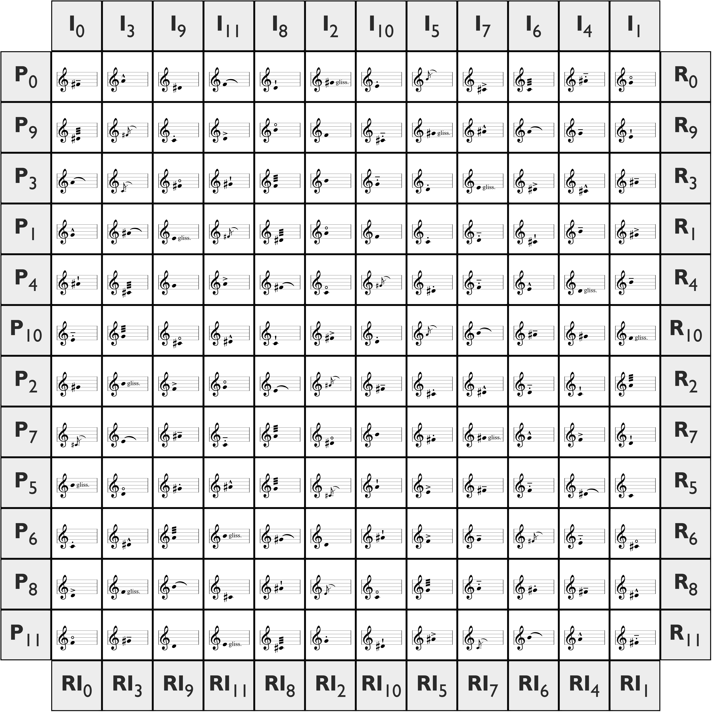

The \( \mathbf{W}^2 \) matrix uses the conventional twelve-tone method of Arnold Schoenberg, in which a prime row is devised and from it the rows of its inversions, retrogrades and retrograde inversions are constructed. This in itself is of course not unusual, but the distinguishing factor of this matrix is that the “mode of attack” (or articulation) is also serialised, and entirely within the matrix itself.
Its name comes from the Wilson Transform operator, \( \mathbf{W} \), and the fact that two musical parameters are serialised; hence, \( \mathbf{W}^2 \).
The function \( \mathbf{W}_n(R) \), the Wilson Transform (based unintentionally on the Josephus permutation!), takes inputs \( n \) and \( R \), where \( n \) is an integer and \( R \) is a sequence of twelve articulations. Firstly we write down the \( n^\text{th} \) element in \( R \), then remove it from \( R \). Next, beginning from the next element (wrapping around where necessary), we count \( n \) elements cyclically and write down the corresponding element, then remove it from \( R \).
Hence, as examples, \( \mathbf{W}_3([1, 2, 3, ..., 12]) = [3, 6, 9, 12, 4, 8, 1, 7, 2, 11, 5, 10] \) and \( \mathbf{W}_{10}([1, 2, 3, ..., 12]) = [10, 8, 7, 9, 12, 3, 11, 6, 2, 4, 1, 5] \).
The prime articulation row is devised first. To create the articulation rows corresponding to the subsequent pitch rows, the index of the starting note of each row is taken (where 0 denotes the first note of the prime row, 1 the next note ascending chromatically, etc.) and 1 is added, in order to preserve the prime articulation row. We assign this value the identifier \( k \). Note that the label P\( k-1 \) is given by the first column of the pitch matrix itself.
Then each articulation row is given by \( \mathbf{W}_k(A) \), where \( A \) is the prime articulation row.
As the Wilson Transform is iterative and selective by nature, it lends itself far more readily to a computational description than an entirely mathematical one. A pseudocode implementation is shown below.
FUNCTION wilsonTransform(n, row)
ARRAY transformed[12]
pointer = 0 // points to next free element in the transformed array
index = -1 // points to current element in the row
WHILE pointer < 12
FOR k = 0 TO n - 1 // counts n items
DO
index = (index + 1) MOD 12 // increments index, cycling round where necessary
UNTIL NOT transformed.contains(row[index]) // increment again if value has already been selected
NEXT k
transformed[pointer] = row[index] // add value to the transformed array
pointer = pointer + 1
ENDWHILE
RETURN transformed
ENDFUNCTION
Prime pitch row: F♯, A, D♯, F, D, G♯, E, B, C♯, C, A♯, G
Prime articulation row: tenuto, marcato, ord., slur, staccatissimo, gliss., staccato, acciaccatura, accent,
tremolo, louré, harmonic
In the standard way, the remaining prime pitch rows are created (the first of which is a transposition of P0 down a minor third, etc.). Then to create the articulation row for the second row, P9, we add 1 to arrive at \( k = 10 \), then we apply the Wilson Transform to give \[ \mathbf{W}_{10}([\text{ten.}, \,\text{marc.}, \,\text{ord.}, \,...\,, \,\text{harm.}]) = [\text{trem.}, \,\text{acciacc.}, \,\text{stacc.}, \,\text{accent}, \,\text{harm.}, \,\text{ord.}, \,\text{louré}, \,\text{gliss.}, \,\text{marc.}, \,\text{slur}, \,\text{ten.}, \,\text{staccatiss.}] \] as shown in the matrix below. Similarly articulation rows are calculated for P3, P1 etc.

In the typical way, one can select rows — for example P6, I7 or RI11 — from which to compose a piece.
Note that, as the mode of attack is constructed purely in rows, any columns (which may be used) may contain duplicate modes of attack and therefore indeed omit some. It is arguable whether this truly fits the brief of serialism, but in my opinion its highly algorithmic construction method and the fact that each articulation occurs the same number of times in the entire matrix mean that this is sufficiently serialist for my satisfaction.
Indeed, I8 is perhaps this particular matrix's most extreme example of this, home to a whopping five tremolos, three slurs, three staccatissimos and one harmonic! Hence this row might be most suited to a string instrument, though naturally wind or brass instruments (flutter-tonguing) and percussion (rolls) could also use this row to great effect. This to me suggests choosing particular rows/columns for particular instruments should perhaps be more carefully considered when using a \( \mathbf{W}^2 \) matrix compared to a standard matrix which only serialises pitch.